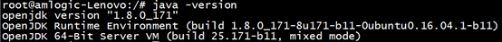
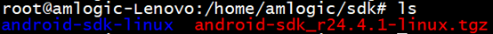
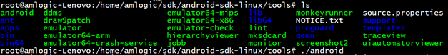
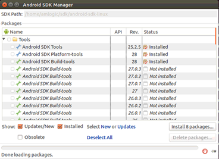
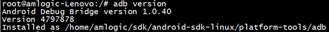
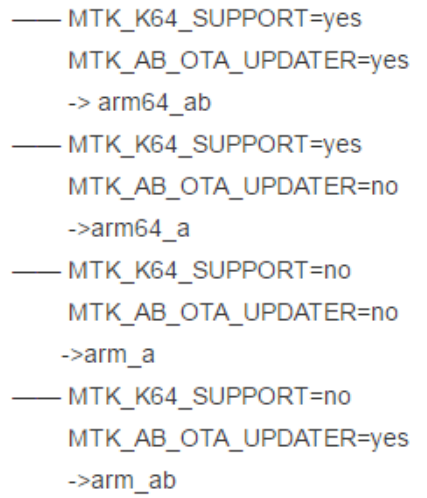

GMS认证测试文档
GMS环境配置及测试方法文档
参考
1 GMS介绍
GMS全称为Google Mobile Service，即谷歌移动服务。是Google为解决Android生态碎片化以及系统更新率慢等问题而发布的统一标准。GMS的目的就是让各种Android设备（如手机和平板等）开发商能够开发出兼容性更好的Android设备。
同时Google制定了CDD（Compatibility Defination Document）规范文档，为了达到验证CDD规范的目的，提供了一组CASE给不同平台厂商进行验证，Android设备只有满足CDD的规定并且通过GMS认证测试，才能获得Android的商标和享受Android Market的权限，才能使用Android Market。
目前Google在全球范围内授权6家3pl实验室来处理GMS认证，分别为：
Fih（富士康）
Harman（哈曼）
Pegatron（和硕）
Windriver（风河）
Mediatek（联发科技，只针对MTK芯片Express plus项目）、
SPRD（展讯，只针对展讯芯片Express plus项目）
还有大量OEM厂商直接和Google对接GMS认证测试。
目前GMS认证测试项包括：
CTS（Android Compatibility Test Suite）
CTS Verifier（Android CTS Verifier）
GTS（Google Mobile Services Test Suite）
VTS（Android Vendor Test Suite）
CTS-ON-GSI（cts on Google System Image）
STS（Security Test Suite）
Android性能测试（仅适用于Android Go版本）
BTS（Build Test Suite，目前此项由3pl实验室进行，直接对接Google的OEM厂商自己进行）
此外，GMS认证还包括项目的备案和项目白名单申请。
2 ubuntu环境安装
2.1 版本信息：
系统版本：Ubuntu 16 LTS
JDK版本： 1.8.0_171
SDK版本：android-sdk_r24.4.1-linux.tgz
ADB版本：1.0.40
apktool版本：2.4.0
aapt(Android Asset Packaging Tool)版本：v0.2-eng.ibotpe.20190216.092407
注意：每个Android版本的GMS要求的版本不同，以测试时要求的为准。
2.2 安装JDK
#sudo add-apt-repository ppa:openjdk-r/ppa
#sudo apt-get update
#sudo apt-get install openjdk-8-jdk
安装完成后，输入java -version，检查环境是否OK，如下：

2.3 安装SDK
1.下载最新SDK版本(点击链接进入下载页面），本文使用android-sdk_r24.4.1-linux.tgz，手动解压，会得到android-sdk-linux文件夹，本文放置到/home/kovy/sdk下，如下：

2.进入tools文件夹，运行./android

3.选择安装最新的工具，一般默认即可，点击”install 8 packages”

4.添加SDK环境变量
<第一种方法>
#sudo gedit ~/.bashrc
//打开文件后，末尾添加如下信息（SDK路径改成实际路径）：
export ANDROID_SDK=/home/kovy/sdk/android-sdk-linux
export PATH=$PATH:$ANDROID_SDK/platform-tools:$ANDROID_SDK/tools
//保存退出后，使环境生效
#source ~/.bashrc
<第二种方法>
#su
//SDK路径改成实际路径
#echo ‘export ANDROID_SDK=/home/kovy/sdk/android-sdk-linux’ >> ~/.bashrc
#echo ‘export PATH=$PATH:$ANDROID_SDK/platform-tools:$ANDROID_SDK/tools’ >> ~/.bashrc
//使环境生效
#source ~/.bashrc
5、验证是否安装ok，输入adb version,如下：

2.4 安装32位类库
#sudo apt-get install lib32ncurses5 lib32z1 libstdc++6:i386 –y
2.5 安装minicom
//非必需，如果使用串口工具调试则安装 #sudo apt-get install minicom –y
2.6 安装apktool
官网教程：
点击链接:
1、下载apktool脚本:apktool (右键点击, 保存链接为文件,文件名保存为apktool，无后缀)，或直接使用下方文件
2、下载最新apktool.jar (点击进入),将下载的最新.jar文件重命名为apktool.jar（例如：apktool_2.4.0.jar改为apktool.jar）
3、将apktool和apltool.jar放置到/usr/local/bin目录下
4、更改文件权限
#su
#chmod 755 /usr/local/bin/apktool
#chmod 755 /usr/local/bin/apktool.jar
5、检查apktool环境：
#apktool –version
2.7 安装aapt工具
解压第六步下载的apktool.jar解压,提取解压后apktool/prebuilt/linux/目录下的aapt文件；
将aapt放置到/usr/local/bin
设置权限：
#chmod 755 /usr/local/bin/aapt验证aapt环境：
#aapt version
2.8 VTS环境（若测试CTS/CTS-ON-GSI/GTS/STS无需配置此项）
1.Install Python development kit:
#sudo apt-get install python-dev
2.Install Protocol Buffer tools (for Python):
#sudo apt-get install python-protobuf
#sudo apt-get install protobuf-compiler
3.Install Python virtual environment-related tools:
#sudo apt-get install python-virtualenv
#sudo apt-get install python-pip
//更新到最新
#sudo pip install –upgrade pip
#sudo pip install –upgrade virtualenv
4.(Optionally) Download Python packages from PyPI to a local directory:
(1) 在合适位置建立VTS_PYPI_PATH文件夹
(2) 将VTS_PYPI_PATH路径加入环境变量后配置环境
#sudo gedit ~/.bashrc
//打开文件后，末尾添加如下信息（VTS_PYPI_PATH路径改成实际路径）：
export VTS_PYPI_PATH=/home/kovy/VTS_PYPI_PATH
//保存退出后，使环境生效
#source ~/.bashrc
#curl https://android.googlesource.com/platform/test/vts/+/master/script/ pip_requirements.txt?format=TEXT | base64 -d > pip_requirements.txt
#pip download -d $VTS_PYPI_PATH -r pip_requirements.txt –no-binary protobuf,grpcio,matplotlib,numpy,Pillow,scipy
2.9 Ubuntu网络国外网配置
(1) 把电脑的mac地址发给网管配置，网管配置完后重启电脑查看电脑的ip是否是172.16.160.xxx网 段。是这个网段基本可以确认可以访问国外网络。
(2) 添加一项dns为8.8.8.8,通过sudo gedit /etc/network/interfaces,再最后面增加dns-nameservers 8.8.8.8。
2.10 配置GTS key路径
sudo gedit ~/.bashrc 再最后面添加如下：
export APE_API_KEY=/home/kovy/GMS/gts/key/gts-harman-public.json
其中harman-public.json需实验室提供。
立即生效：source ~/.bashrc
2.11 配置fastboot usb
(1) 在终端输入lsusb查看当前usb设备的vendorid和productid,
(2) 在终端输入gedit /etc/udev/rules.d/51-android.rules,添加如下
SUBSYSTEM==”usb”, ATTR{idVendor}==”1782”, ATTR{idProduct}==”4002”, MODE=”0666”
把前面的vendorid和productid对应添加，有时候需要重启电脑生效识别
3 测试工具和设备配置要求
3.1 测试工具包
CTS（https://source.android.google.cn/compatibility/cts/downloads）
CTS Verifier（https://source.android.google.cn/compatibility/cts/downloads）
GTS（3pl实验室提供或直接MADA账户下载）
VTS（3pl实验室提供或直接MADA账户下载）
CTS-ON-GSI（此项和VTS使用相同的VTS测试包）
STS（3pl实验室提供或直接MADA账户下载，此测试包分32位和64位）
GSI镜像（3pl实验室提供或直接MADA账户下载，此测试包分32位和64位）
Media媒体文件（https://dl.google.com/dl/android/cts/android-cts-media-1.5.zip）
M5x的这些包都由MADA公司提供，无需自己下载。
3.2 设备端配置要求
设备烧写User版本软件（STS 和 Go版本性能测试 需要下载UserDebug版本软件）
请烧写有效的SN序列号，IMEI，wifi地址，BT地址，MEID，Googlekey等信息
连接可用wifi（此处需要翻墙网络，保证设备可正常访问Google服务器）
开启蓝牙，Settings > Connected devices >Bluetooth ，打开
设置屏幕超时为最长，Settings > Display > Sleep > 30 minutes，勾选
设置永不锁屏，Settings > Security & location > Screen lock > None，勾选
开启Location，Settings > Security & location > On（6.0以上版本每次执行前均会检查GPS是否开启，未开启则停止测试）
设置语言为English(United States)，Settings > System > Language & input > language，设为English(United States)
开启备份选项，Settings > System > Backup > Back up to Google Drive(系统需预设Drive为默认备份项，GTS测试必开此项，其他测试可不开)
开启 USB debugging，Settings > System > Developer options > USB debugging（注意：在 Android 4.2 及更高版本中，默认情况下会隐藏开发者选项。要显示这些选项，请依次转到Settings > System > About phone > Build number，然后点击Build number项七次。返回上一屏幕以查找开发者选项。）
保持唤醒状态，Settings > System > Developer options > Stay Awake，勾选
关闭Verify apps over USB，Settings > System > Developer options > Verify apps over USB ,点击使关闭
拷贝媒体文件（仅在测试CTS和Cts-on-gsi时候需要执行此项，如果没有拷贝设备端会自动进行下载，非常耗时，建议主动拷贝媒体文件到设备，以节约时间），在测试电脑上，通过adb正常连接设备后，进入媒体文件目录，执行目录下的copy_media.sh和copy_image.sh即可自动拷贝媒体文件到设备。可添加-s参数指定设备sn号来拷贝，如下：./copy_media.sh -s 123456789
支持TFCard的设备，请插入TFCard，Google要求class10以上的T卡（仅在测试CTS和Cts-on-gsi时候需要执行此项，建议在retry阶段再单台设备插入即可）
支持SIM卡设备，请插入SIM卡（CTS测试需要此项，请保证设备可读取SIM卡号，数据流量可正常使用）
4 测试指令及流程
4.1 CTS测试
4.1.1 CTS测试准备
电脑端操作：进入CTS测试包目录/android-cts/tools/，执行 ./cts-tradefed，即可进入到CTS测试环境
设备端操作：请根据前述 设备端配置要求，进行设置，通过数据线连接到电脑端，执行拷贝媒体文件（建议首次测试所有设备拷贝媒体文件，只写SN序列号，在retry 阶段再在单台设备上烧写其他信息，插入SIM卡和TF卡来进行测试）。media文件放在电脑中的/tmp/android-cts-media路径下，如果/tmp/android-cts-media路径下没有media文件，电脑端将会自动从网上下载（需翻墙网络），由于文件比较大，会比较耗时。
CTS 10_R5测试共689个模块，1190931项测试（根据设备软硬件配置差异会略有不同），建议多台设备一同测试以节约时间，基本上64位系统，4台设备一起测试，需要30～40小时。
4.1.2 执行CTS测试
a、执行整个CTS的测试：
run cts （单台测试命令）
run cts –shard-count <number_of_shards>（多台测试命令 ，num为设备数量）
还可使用下面命令：
run cts –shard-count num -o -d –skip-system-status-check com.android.compatibility.common.tradefed.targetprep.NetworkConnectivityChecker
注：
-o = –skip-preconditions 跳过媒体文件等预设检测
-d =–skip-device-info 跳过设备信息收集过程（可内部自测使用，申请白名单签名项和生成正式报告不建议使用）
–skip-system-status-check com.android.compatibility.common.tradefed.targetprep.NetworkConnectivityChecker跳过网络连接检测
b、CTS第一次结束之后，会留有失败项和未执行项，按如下执行retry 继续进行测试（请烧写各种号码，插入SIM卡和TF卡）。
在cts测试环境下，执行l r（就是list result）指令，会列出当前已经测试过的内容，如下：
首列为测试的Session ID，进行retry测试需要上一次的Session ID，继续执行如下指令：
run retry –retry sessionid
注：如果一次测试结束后，失败项或未执行项非常多，可以进行多台设备retry，执行如下指令：
run retry –retry sessionid –shard-count num
c.生成测试计划及运行测试计划
生成测试子计划：
add subplan –name/-n <subplan_name> –result-type [pass | fail | timeout | notExecuted] [–session/-s <session_id>]
运行测试子计划：
run cts –subplan <test_plan_name>
查看子计划：
list subplans
4.1.3 其他常用测试指令
列出所有跑测结果
l r
列出所有检测到或已知的设备
l d
单跑某一个模块
run cts -m <模块名>
单跑某个测试项
run cts -m <模块名> -t <测试项名>
更多的命令可通过 help all 来查看
4.1.4 CTS测试报告及log
1、测试报告
路径：报告文件位于android-cts/results下面
命名规则：以测试开始执行的日期和时间命名
查看报告文件：(建议使用Chrome或火狐浏览器打开)
test_result.xml 此为完整的测试报告，较大，容易引起电脑卡死，不要轻易打开它
test_result_failures.html 此为仅包含失败项和未执行项的测试报告，一般查看此报告即可。
2、CTS log
路径：文件位于android-cts/logs
命名规则：以测试开始执行的日期和时间命名
4.1.5 测试中可能遇到的问题
测试遇到Media模块问题需要复测时，media文件下载花费大量的时间
media文件放在电脑中的/tmp/android-cts-media路径下，如果/tmp/android-cts-media路径下没有media文件，电脑端将会自动从网上下载（需翻墙网络），由于文件比较大，会比较耗时。Camera问题
Camera模块可能会出现大量错误，应尽早解决，因可能涉及和Camera厂商联调花费大量时间。
4.2 CTS Verifier测试相关
4.2.1 测试准备
1、通过adb命令安装CtsVerifier.apk、NotificationBot.apk、CtsVerifierUSBCompanion.apk、CtsPermissionApp.apk等，命令如下：
adb install -r xxx.apk
2、打开手机上的CTS Verifier应用，根据提示测试每一项
可查看下面文档。
Android_10.0_CTS_Verifier_Test_Guide_V1.1
Android_P_ITS测试流程
4.2.2 保存查看结果
所有测试完成后，点击CTS Verifier测试工具右上角的保存按钮，会提示结果保存位置，连接电脑，将结果拷贝到电脑即可查看。
4.3 GTS测试
4.3.1 GTS测试准备
电脑端操作：电脑端需要连接翻墙网络，确保电脑端可以正常访问Google服务器，进入GTS测试包目录/android-gts/tools/，执行 ./gts-tradefed，即可进入到GTS测试环境
GTS测试需要key，把key放到电脑目录下，然后配置环境变量。如下：
sudo gedit ~/.bashrc
添加如下环境变量
export APE_API_KEY=/home/kovy/GMS/gts/key/gts-harman-public.json
生效命令：source ~/.bashrc
设备端操作：请根据前述 设备端配置要求，进行设置，通过数据线连接到电脑端，不需拷贝媒体文件，Backup项必须打开。
目前GTS 8.0_R1测试项共206个模块3000个测试项（根据设备软硬件配置差异会略有不同），测试项不多，单台设备测试即可，但是要保证翻墙网络的高速稳定，GTS测试会播放Google服务器端的网络视频。测试时间试网络情况而定，大约10小时左右。
4.3.2 执行GTS测试
a、执行整个GTS的测试：
run gts （命令较特殊）
b、GTS第一遍结束之后，会留有失败项和未执行项，按如下执行retry 继续进行测试
l r 查看测试结果，获取session_id
run retry –retry session_id –shard-count num
4.3.3 执行单独模块或者单独测试项
列出所有跑测结果
l r
列出所有检测到或已知的设备
l d
单跑某一个模块
run gts -m <模块名>
单跑某个测试项
run gts -m <模块名> -t <测试项名>
更多的命令可通过 help all 来查看
4.3.4 GTS测试报告及log
1、测试报告
路径：文件位于android-gts/results下面
命名规则：以测试开始执行的日期和时间命名
查看报告文件：(建议使用Chrome或火狐浏览器打开)
test_result.xml 此为完整的测试报告，较大，容易引起电脑卡死
test_result_failures.html此为仅包含失败项和未执行项的测试报告，一般查看此报告即可。
2、GTS log
路径：文件位于android-gts/logs
命名规则：以测试开始执行的日期和时间命名
4.3.5 测试中可能遇到的问题
在使用新版本的GTS测试包时，可能会出现要求升级JDK版本的问题，在测试开始会提示。
4.4 VTS测试
为了能更快的将设备升级到新的Android版本，Android O 开始新引入了 Project Treble，相应的GMS认证增加了VTS测试和Cts-on-gsi(针对GSI版本的CTS)测试。
4.4.1 VTS测试准备
电脑端操作：
电脑端安装python环境并且连接网络，然后进入VTS测试包目录/android-vts/tools/，执行 ./vts-tradefed，即可进入到VTS测试环境
设备端操作：
设备端需要烧写GSI镜像文件（请参考VTS镜像烧入方法），然后根据前述 设备端配置要求，进行设置，通过数据线连接到电脑端，不需拷贝媒体文件，但在Android 10的测试中，media文件要放在电脑中的/tmp/android-cts-media路径下，如果/tmp/android-cts-media路径下没有media文件，电脑端将会自动从网上下载（需翻墙网络），由于文件比较大，会比较耗时。
目前VTS测试项共316个模块，12462个测试项，（根据设备软硬件配置差异会略有不同），测试项不多，单台设备测试即可，但是要保证电脑端有网络连接，不然会影响python初始化，而引起跑不起来。测试包用时5小时左右。
4.4.2 执行VTS测试
a、执行整个VTS的测试：
run vts
b、VTS第一遍结束之后，会留有失败项和未执行项，按如下执行retry 继续进行测试
l r 查看测试结果，获取session_id
run vts –retry session_id –shard-count num
4.4.3 执行单独模块或者单独测试项
列出所有跑测结果
l r
列出所有检测到或已知的设备
l d
单跑某一个模块
run vts -m <模块名>
单跑某个测试项
run vts -m <模块名> -t <测试项名>
更多的命令可通过 help all 来查看
4.4.4 VTS测试报告及log
1、测试报告
路径：文件位于android-vts/results下面
命名规则：以测试开始执行的日期和时间命名
查看报告文件：(建议使用Chrome或火狐浏览器打开)
test_result.xml 此为完整的测试报告，较大，容易引起电脑卡死
test_result_failures.html 此为仅包含失败项和未执行项的测试报告，一般查看此报告即可。
2、VTS log
路径：文件位于android-vts/logs
命名规则：以测试开始执行的日期和时间命名
4.4.5 测试中可能会遇到的问题
USB无法识别问题
解决办法：
把51-android.rules拷贝到/etc/udev/rules.d/51-android.rules
添加对应的usb id，可以通过lsusb查看
重启电脑生效
4.5 GSI（Cts-on-gsi）测试
4.5.1 GSI测试准备
电脑端操作：电脑端安装python环境并且连接网络，进入VTS测试包目录/android-vts/tools/，执行 ./vts-tradefed，即可进入到GSI测试环境（测试包和VTS测试相同）
设备端操作：设备端需要烧写GSI镜像文件（请参考CTS-ON-GSI镜像烧入方法），然后根据前述 设备端配置要求 进行设置，通过数据线连接到电脑端，需拷贝媒体文件。
目前GSI测试项共346个模块，580020个测试项（基本是CTS的一半，根据设备软硬件配置差异会略有不同），建议多台设备一同测试以节约时间，基本上64位系统，3台设备一起测试，需要20小时左右。
4.5.2 执行GSI测试
a、执行整个GSI的测试：
run cts-on-gsi
run cts-on-gsi –shard-count num -o
b、GSI第一遍结束之后，会留有失败项和未执行项，按如下执行retry 继续进行测试
l r 查看测试结果，获取session_id
run retry –retry session_id –shard-count num -o
4.5.3 执行单独模块或者单独测试项
列出所有跑测结果
l r
列出所有检测到或已知的设备
l d
单跑某一个模块
run cts-on-gsi -m <模块名>
单跑某个测试项
run cts-on-gsi -m <模块名> -t <测试项名>
更多的命令可通过 help all 来查看
4.5.4 GSI测试报告及log
1、测试报告
路径：文件位于android-vts/results下面
命名规则：以测试开始执行的日期和时间命名
查看报告文件：(建议使用Chrome或火狐浏览器打开)
test_result.xml 此为完整的测试报告，较大，容易引起电脑卡死
test_result_failures.html 此为仅包含失败项和未执行项的测试报告，一般查看此报告即可。
2、GSI log
路径：文件位于android-vts/logs
命名规则：以测试开始执行的日期和时间命名。
4.5.5 测试中可能遇到的问题
GSI测试中大部分测试用例与CTS中相同，可以先解决CTS的问题，解完CTS可能GSI的问题也就解决了。
4.6 STS测试
4.6.1 STS测试准备
电脑端操作：STS测试包分32位和64位版本，请根据设备端软件选择对应版本。进入STS测试包目录/android-sts/tools/，执行 ./sts-tradefed，即可进入到STS测试环境
设备端操作：设备端需要烧写UserDebug版本软件，然后根据前述 设备端配置要求，进行设置，通过数据线连接到电脑端，不用拷贝媒体文件，不用SIM卡和TF卡。
目前STS测试项共580项（根据设备软硬件配置差异会略有不同），单台设备测试即可。64位系统，单台测试，需要5小时左右。
4.6.2 执行STS测试
a、执行整个STS的测试：
run sts-engbuild
b、STS第一次结束之后，会留有失败项和未执行项，请执行retry进一步测试，请按如下执行retry 继续进行测试。
在sts测试环境下，执行l r（就是list result）指令，会列出当前已经测试过的内容，如下：
首列为测试的Session ID，进行retry测试需要上一次的Session ID，继续执行如下指令：
run retry –retry session-id
4.6.3 其他常用测试指令
列出所有跑测结果
l r
列出所有检测到或已知的设备
l d
单跑某一个模块
run sts-engbuild -m <模块名>
单跑某个测试项
run sts-engbuild -m <模块名> -t <测试项名>
更多的命令可通过 help all 来查看
4.6.4 STS测试报告及log
1、测试报告
路径：报告文件位于android-sts/results下面
命名规则：以测试开始执行的日期和时间命名
查看报告文件：(建议使用Chrome或火狐浏览器打开)
test_result.xml 此为完整的测试报告，较大，容易引起电脑卡死
test_result_failures.html 此为仅包含失败项和未执行项的测试报告，一般查看此报告即可。
2、STS log
路径：文件位于android-sts/logs
命名规则：以测试开始执行的日期和时间命名
4.7 Go版本性能测试（本章节为参考，M5x是非GO版本）
4.7.1 Go版本性能测试准备
电脑端操作：只有Go版本软件需要进行性能测试，使用Google提供的性能测试脚本（perf-scripts-2018-05-31-1527799913-198773620.tar.gz）,还需要Google提供的3P Apps（Test APKs-20180531T020725Z001.zip）。解压测试脚本后，将3A Apps内容拷贝到测试文件夹的apps目录，待设备连接到电脑后，执行./main.sh即可。
设备端操作：设备端需要烧写UserDebug版本软件，然后做如下设置：
插入TF卡
开启wifi，但不用连接
开启stay awake（11.Settings > System > Developer options > Stay Awake，勾选）
设置无屏锁（Settings > Security & location > Screen lock > None，勾选）
性能测试单台设备测试即可，测试成功会生成压缩包，一般需要多次测试才可完成。
4.7.2 执行性能测试
设备根据1中设置好之后，连接到电脑端，在测试脚本根目录下执行./main.sh
4.7.3 性能测试报告及log
测试报告
路径：报告文件位于测试脚本根目录下面
命名规则：results-设备SN号码-时间戳.tar.gz
查看报告文件：在测试脚本根目录下有：summary_results和test_results两个文件夹，压缩包里面的就是这两项内容。其中，summary_results中的内容是各测试项的结果；test_results中包含针对每个app的测试结果。
报告解读：请参考MTK的CDD文档中内容分析性能测试结果。
5 镜像烧入方法
5.1 VTS镜像烧入方法
此项测试需要有boot权限
设备刷入USER版本。
设备端进入Settings > System > Developer options,分别打开OEM unlocking和USB debugging选项开关
设备长按音量 + 和电源键进入fastboot模式（或在开机模式下在电脑端cmd（或shell）窗口直接执行adb reboot bootloader）
cmd（或shell）窗口执行fastboot flashing unlock，执行命令后需要选择音量 + 来确认unlock
cmd（或shell）窗口执行fastboot flash boot boot-debug.img，此项可选执行，出现烧录完成无法开机现象，请添加执行此项(以M5x为例，boot-debug.img在系统out/target/product/M5x目录下获取)
cmd（或shell）窗口执行fastboot reboot fastboot
cmd（或shell）窗口执行fastboot erase system，此项可选执行，出现烧录完成无法开机现象，请添加执行此项。
cmd（或shell）窗口执行fastboot flash system system.img（system.img就是GSI镜像，版本确认请参考如何如何确认GSI镜像）
cmd（或shell）窗口执行fastboot reboot
5.2 CTS-ON-GSI镜像烧入方法
此项测试不能有boot权限
设备刷入USER版本。
设备端进入Settings > System > Developer options,分别打开OEM unlocking和USB debugging选项开关
设备长按音量 + 和电源键进入fastboot模式（或在开机模式下在电脑端cmd（或shell）窗口直接执行adb reboot bootloader）
cmd（或shell）窗口执行fastboot flashing unlock，执行命令后需要选择音量 + 来确认unlock
cmd（或shell）窗口执行fastboot reboot fastboot
cmd（或shell）窗口执行fastboot erase system，此项可选执行，出现烧录完成无法开机现象，请添加执行此项。
cmd（或shell）窗口执行fastboot flash system system.img（system.img就是GSI镜像，版本确认请参考如何确认GSI镜像）
cmd（或shell）窗口执行fastboot reboot bootloader
cmd（或shell）窗口执行fastboot flashing lock
cmd（或shell）窗口执行fastboot reboot
6 如何确定GSI镜像 a/ab版本
请根据下图查找项目软件ProjectConfig.mk中对应各项宏定义值，确认系统所支持的是a/ab版本，然后根据对应Security patch level来选择对应的GSI版本，如：signed_signed-aosp_arm64-img-6860398.zip

7 白名单和Googlekey申请
7.1 资料准备
更新系统的GMS包为最新版本。
本设备任意一条测试case， CTS或者GTS随意一项（主要是为了提起设备信息， fail的也行），注意case中包括了fingerprint，提供的fingerprint要和最终的送测版本不一样。
device ID, 用于申请Google key，文件名格式举例：xxx_xxxM5x_00.txt，必须是TXT文档（sn不超过32个字符）可以用SN号段编译，M5x写了10万个SN即keybox可以写入到10万个机器中，SN格式如下：
xxx_xxxM5x_0000001
xxx_xxxM5x_0000002
xxx_xxxM5x_0000003….GMS_DeviceInfo表格，表格是由MADA提供，主要填写系统的属性及参数；
提供run cts -m CtsCurrentApiSignatureTestCases 签名报告；
注意：这个时候版本的fingerprint中品牌名称及设备名称已确定，后面不可修改。
8 FingerPrint
8.1 FingerPrint的组成
xxxM5x FingerPrint：xxx/M5x/xxxM5x:10/QP1A.190711.020/PayDroid1000BirchV15100T3:user/release-keys
BUILD_FINGERPRINT := $(PRODUCT_BRAND)/$(TARGET_PRODUCT)/$(TARGET_DEVICE):$(PLATFORM_VERSION)/$(BUILD_ID)/$(BF_BUILD_NUMBER):$(TARGET_BUILD_VARIANT)/$(BUILD_VERSION_TAGS)
FingerPrint在该文件中生成：build/make/core/Makefile。
(PRODUCT_BRAND)/$( TARGET_PRODUCT)/$( TARGET_DEVICE) 不能包含空格或者 ‘.’。
8.2 FingerPrint要求
Build fingerprint必须唯一，没有使用过，Build fingerprint必须包含release-keys
正式送测fingerprint必须和申请白名单的fingerprint不一致，否则无法上传APFE。
8.3 FingerPrint相关属性要求
devices信息和Vendor devices信息一致
ro.build.fingerprint和ro.vendor.build.fingerprint必须一样；
ro.product.brand和ro.vendor.product.brand必须一样；
ro.product.device和ro.vendor.product.device必须一样；
ro.product.manufacturer和ro.vendor.product. manufacturer必须一样；
ro.product.model和ro.vendor.product.model必须一样；
ro.product.name和ro.vendor.product.name必须一样；
这三个值必须一致：ro.vendor.build.fingerprint，ro.build.fingerprint，ro. bootimage.build.fingerprint；
9 GMS需要自检查属性及显示等
这里是用M5x的文档举例，每个版本的要求可能略有不同。
Customer_Checklist_V9_2020